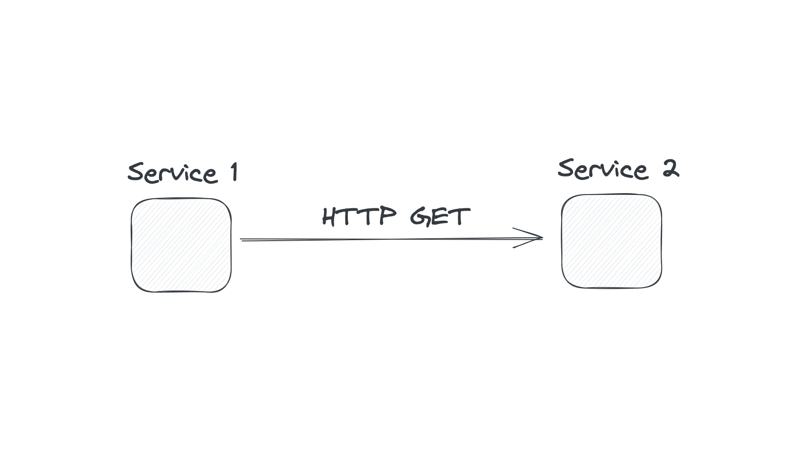

Dancing with Uncertainty
Challenges of Distributed Systems
Grzegorz Piwowarek
{ 4comprehension.com }
Java Champion | Oracle ACE
@pivovarit
CAP Theorem
- Consistency
- Availability
- Partition tolerance
Consistency
every read receives the most recent write
(a single-copy illusion)Availability
every request receives a non-error response
(even if some nodes are down)Partition tolerance
system continues to operate even if network links are lost
What makes systems...distributed?
distributed systems are systems that communicate over unreliable channels
Network is unreliable
as of 2026 https://slate.com/technology/2014/08/shark-attacks-threaten-google-s-undersea-internet-cables-video.html
https://slate.com/technology/2014/08/shark-attacks-threaten-google-s-undersea-internet-cables-video.html

https://en.wikipedia.org/wiki/IP_over_Avian_Carriers
Rule: In the presence of a network partition, a distributed system must choose either Consistency or Availability.
The Two Generals Problem
Two generals are planning to attack a city. They can only communicate via messengers, who may be captured.
How can both generals be sure they attack at the same time, given that messages might not arrive?
There is no deterministic way for two parties to coordinate over an unreliable communication channel.
...
When sending a message over unreliable channels, how to guarantee delivery?
(...thought experiment...)Definition
An operation is idempotent if performing it multiple times produces the same effect as performing it once.
f(f(x)) = f(x)Examples
- Setting a user’s status to “active” → ✅
- Incrementing a counter → ❌
In a distributed system
Failures and retries are inevitable.
- Network retries may cause duplicate requests
- Clients or load balancers might resend operations
- Idempotency prevents unwanted side effects
Exactly-once delivery?
A fairy tale.
Reality: You only ever get:
- at-most-once → messages may be lost
- at-least-once → messages may be duplicated
Exactly-once doesn’t exist
- Networks can fail between send and acknowledge
- Clients can retry
- Servers can crash mid-processing
Exactly-once effect
We can't guarantee exactly-once delivery,
but we can design for exactly-once effect using idempotency.
at-least-once delivery + idempotency = exactly-onceResilience Patterns
When failures are inevitable, design for graceful degradation.
Circuit Breaker
Prevent cascading failures by failing fast.
- Closed → requests pass through normally
- Open → requests fail immediately (no calls to failing service)
- Half-Open → test if service recovered
Circuit Breaker States
Failures trigger opening; timeout triggers half-open; success closes.Circuit Breaker Example
@CircuitBreaker(name = "paymentService",
fallbackMethod = "fallbackPayment")
public Payment processPayment(Order order) {
return paymentClient.charge(order);
}
public Payment fallbackPayment(Order order, Exception e) {
return Payment.pending(order.id()); // graceful degradation
}
Retry with Exponential Backoff
Don't hammer a failing service - back off gradually.
Attempt 1: wait 100ms
Attempt 2: wait 200ms
Attempt 3: wait 400ms
Attempt 4: wait 800ms
...
Add Jitter
Without jitter, retries synchronize → thundering herd.
long backoff = (long) Math.pow(2, attempt) * baseDelay;
long jitter = random.nextLong(backoff / 2);
long delay = backoff + jitter;
Jitter spreads retries over time, reducing load spikes.
Thundering Herd Problem
When many clients retry at the same time:
- Service just recovered
- All clients retry simultaneously
- Service overwhelmed again
- Cycle repeats
Solution: exponential backoff + jitter
Bulkhead Pattern
Isolate failures to prevent total system collapse.
Named after ship compartments that contain flooding.
Bulkhead Strategies
- Thread pool isolation → separate pools per dependency
- Semaphore isolation → limit concurrent calls
- Connection pool limits → prevent resource exhaustion
@Bulkhead(name = "inventoryService",
type = Bulkhead.Type.THREADPOOL)
public Inventory checkStock(String productId) {
return inventoryClient.getStock(productId);
}
Timeout Strategies
How long should you wait?
It's harder than it looks.
Timeout Considerations
- Too short → false failures, wasted work
- Too long → resource exhaustion, cascading delays
- p99 latency ≠ typical latency
- Downstream timeouts should be shorter than upstream
Timeout Budget
Client timeout: 3000ms
└─ Service A timeout: 2000ms
└─ Service B timeout: 1000ms
└─ Database timeout: 500ms
Each layer must complete within its budget.
Combining Patterns
@CircuitBreaker(name = "backend")
@Bulkhead(name = "backend")
@Retry(name = "backend")
@TimeLimiter(name = "backend")
public CompletableFuture<Result> callBackend() {
return backendClient.fetch();
}
Order matters: Retry → CircuitBreaker → Bulkhead → TimeLimiter
Observability
You can't fix what you can't see.
The Three Pillars
- Metrics → aggregated numerical data (counters, gauges, histograms)
- Logs → discrete events with context
- Traces → request flow across services
You need all three for full visibility.
Distributed Tracing
Follow a request as it travels through multiple services.
Trace Anatomy
Trace ID: abc-123
├─ Span: API Gateway (50ms)
│ └─ Span: OrderService (120ms)
│ ├─ Span: InventoryService (45ms)
│ └─ Span: PaymentService (60ms)
│ └─ Span: Database (15ms)
Each span represents one unit of work.
Correlation IDs
Propagate a unique ID through all services:
// Incoming request
String traceId = request.getHeader("X-Trace-Id");
if (traceId == null) {
traceId = UUID.randomUUID().toString();
}
MDC.put("traceId", traceId);
// Outgoing request
httpClient.setHeader("X-Trace-Id", traceId);
Now you can correlate logs across all services.
What Tracing Reveals
- Which service is the bottleneck?
- Where did the request fail?
- What's the actual call graph?
- Are there unexpected dependencies?
PACELC Theorem
Daniel Abadi extended CAP to include trade-offs when no partition occurs:
If P (partition) → A or C
Else (ok) → Latency or Consistency
Even without partitions, there’s another trade-off
Waiting for consensus takes timeThis is the “ELC” part of PACELC.
Imagine two coffee shops sharing an order system
- network failure → choice: keep taking orders (A) or pause until synced (C)
- no failure → each order can be: fast but maybe outdated (L) or slow but always accurate (C)
Real-world examples
- Amazon Dynamo / Cassandra → prioritize Availability + Low Latency
- Google Spanner → prioritize Consistency, accept more latency
temporal coupling
when all your services need to be responsive at the same time
False Dichotomy:
Consistent vs. Inconsistent
Different consistency levels
- Strong consistency → Data converges immediately
- Eventual consistency → Data converges... eventually
- Accidental consistency → Data converges... maybe
All are “consistent” — just in different ways.
Eventual consistency
If no new updates occur, all replicas will eventually converge to the same state.
It’s a trade-off: we get availability and speed at the cost of temporary disagreement.
Why this makes sense
- Networks are slow and unreliable
- Waiting for everyone to agree slows everything down
- So we let nodes respond now and sync later
→ Fast now, consistent later
Conflict Resolution
When replicas diverge, how do we reconcile?
Last-Write-Wins (LWW)
Simplest approach: highest timestamp wins.
Node A: set("key", "A", t=100)
Node B: set("key", "B", t=105)
Result: "B" wins (higher timestamp)
Problem: Relies on synchronized clocks. Data can be silently lost.
Application-Level Resolution
Let the application decide how to merge:
- Shopping cart → union of items
- Counter → sum of increments
- Document → show conflict to user
Requires domain knowledge.
CRDTs
Conflict-free Replicated Data Types
Data structures that automatically merge without conflicts.
CRDT Properties
- Replicas can be updated independently
- Updates always converge to the same state
- No coordination required during updates
- Mathematically guaranteed to be conflict-free
CRDT Examples
- G-Counter → grow-only counter (each node tracks its own count)
- PN-Counter → counter with increments and decrements
- G-Set → grow-only set (add-only)
- OR-Set → observed-remove set (add and remove)
- LWW-Register → last-writer-wins register
G-Counter Example
Node A: {A: 5, B: 0, C: 0} // A incremented 5 times
Node B: {A: 0, B: 3, C: 0} // B incremented 3 times
Node C: {A: 0, B: 0, C: 2} // C incremented 2 times
Merge: {A: 5, B: 3, C: 2} // take max of each
Total: 5 + 3 + 2 = 10
No conflicts possible - just take the maximum per node.
CRDTs in Practice
- Redis → CRDT-based active-active replication
- Riak → built-in CRDT support
- Cassandra → counter columns
- Collaborative editing → Google Docs, Figma
CRDT Trade-offs
- ✅ Always available, always convergent
- ✅ No coordination overhead
- ❌ Limited to specific data structures
- ❌ Can grow unbounded (tombstones, version vectors)
- ❌ Eventual consistency only
synchronous communication
asynchronous communication

From HTTP calls...
OrderService -> PaymentService -> NotificationService
Each service calls another directly...
...tight coupling, dependencies, and failure chains.
...to Events
OrderService --> publishes OrderCreatedEvent
PaymentService --> consumes OrderCreatedEvent
NotificationService --> consumes PaymentConfirmedEvent
Services react to events instead of making direct calls.
Local Read Models
Each service maintains its own local view of data it needs.
@EventListener
void on(PaymentConfirmedEvent event) {
orderReadModel.updateStatus(event.orderId(), "PAID");
}
This enables fast, local reads - no cross-service queries needed
...but it eventually consistent
Why Local Read Models?
- No need to call other services for data
- Improves reliability - service can operate even if others are down
Time

var first = Instant.now();
var second = Instant.now();
first <= second?
Clocks in Distributed Systems
A monotonic clock always moves forward - never backward.
But most system clocks are not monotonic.
Why clocks go backwards
- NTP (Network Time Protocol) adjustment
- Virtual machines paused and resumed
- Leap seconds
- Manual time correction by an admin
Monotonic clocks to the rescue
- In Java:
System.nanoTime() - In Linux:
CLOCK_MONOTONIC
They never go backward, but don’t represent “real” time.
Measuring time: from Java to kernel and back
In distributed systems, time is… an illusion.
The problem with clocks
- Each machine has its own clock
- Clocks drift - even if synced
- Network delays make “now” ambiguous
So: there is no single, global “current time.”
Example
Two servers record an event:
- Server A: event at 12:00:00.100
- Server B: event at 12:00:00.090
Which happened first? 🤔
Why this matters
- Event ordering affects state changes
- Conflicts appear when we can’t tell “what came first”
- Replication, logs, and causality all depend on time
Happened-before relationship
Instead of wall-clock time, we use causal order:
A → B if A happened before B (causally)
We care about ordering of events, not their timestamps.
Logical clocks
- Lamport clocks → simple counters to track causal order
- Vector clocks → richer structure to detect concurrent events
They don’t measure real time - they measure cause and effect.
Real time vs. logical time
- Real time → what your watch shows
- Logical time → what the system can prove happened first
Distributed systems live in logical time.
Google’s Spanner uses special hardware clocks (TrueTime API) ⏱️
But even then, they include an uncertainty window - because perfect time doesn’t exist.
Summary
- Each node has its own imperfect sense of time
- We can't rely on timestamps for ordering
- We use logical or causal time to reason safely
Time is relative - especially in distributed systems 🌌
Consensus & Coordination
Getting distributed nodes to agree on something.
Leader Election
Many distributed systems need a single leader:
- Database primary replica
- Distributed lock manager
- Kafka partition leader
- Scheduler coordination
Why Leader Election Is Hard
- Network partitions → multiple nodes think they're leader
- Clock skew → lease expiration disagreements
- Process pauses → GC, VM migrations
- Failures during election → stuck state
Consensus Algorithms
- Paxos → the original (and notoriously hard to understand)
- Raft → designed for understandability
- Zab → ZooKeeper's protocol
All solve the same fundamental problem: agreement despite failures.
Raft in a Nutshell
- Nodes start as followers
- If no heartbeat from leader → become candidate
- Request votes from other nodes
- Majority votes → become leader
- Leader replicates log entries to followers
Practical Leader Election
Don't implement consensus yourself. Use:
- ZooKeeper → battle-tested, ephemeral nodes
- etcd → Kubernetes' choice, Raft-based
- Consul → service mesh + KV store
Distributed Locking
Mutual exclusion across multiple nodes.
Spoiler: it's really hard to get right.
The Redlock Controversy
Redis proposed Redlock algorithm for distributed locks.
Martin Kleppmann (DDIA author) argued it's unsafe.
- Clock assumptions are unrealistic
- Process pauses can violate safety
- GC can cause lock to expire while holding it
Fencing Tokens
Safer approach: use monotonically increasing tokens.
Lock acquired with token: 42
// Later, when using the lock:
storage.write(data, fencingToken=42)
// Storage rejects writes with old tokens
if (requestToken < currentToken) reject();
The resource itself validates the lock.
When You Need Distributed Locks
- Efficiency → prevent duplicate work (lock loss is OK)
- Correctness → prevent data corruption (lock loss is NOT OK)
For correctness, use proper consensus (ZooKeeper, etcd) or fencing tokens.
Split Brain Problem
When network partition creates two groups, each thinking they're the authority.
Split Brain Scenario
[Network Partition]
| |
+---------+ +---------+
| Node A | | Node C |
| Node B | | Node D |
+---------+ +---------+
"We're the "We're the
cluster!" cluster!"
Both sides accept writes → data divergence.
Preventing Split Brain
- Quorum → require majority (N/2 + 1) for decisions
- STONITH → "Shoot The Other Node In The Head" (force restart)
- Fencing → isolate the minority partition
- Witness node → odd number of voters
Quorum Math
3 nodes: need 2 to agree (can lose 1)
5 nodes: need 3 to agree (can lose 2)
7 nodes: need 4 to agree (can lose 3)
Only one partition can ever have a majority.
This is why ZooKeeper/etcd recommend odd numbers.
Eventual Consistency != Accidental Consistency


@Transactional
public void createUser(CreateUserCommand command) {
var user = from(command);
persist(user); // 1
send(UserCreatedEvent.from(user)); // 2
}
@Transactional won't save you in the distributed world
Dual-Write (distributed transaction)

Single-Write with async propagation

Transactional Outbox Pattern
Change Data Capture
Transactional Outbox Pattern
Write the event to a local outbox table as part of the same transaction.
@Transactional
public void createOrder(Order order) {
orderRepository.save(order);
outboxRepository.save(new OutboxEvent("OrderCreated", order.id()));
}
Then a separate process reads the outbox and publishes the events
Trivial Publisher
while (true) {
for (OutboxEvent event : outboxRepository.findUnpublished()) {
eventBus.publish(event.toDomainEvent());
event.markAsPublished();
}
}
Reliable, asynchronous, and decoupled event publishing.
Change Data Capture (CDC)
Instead of polling the outbox table manually...
We can let the database stream its own changes.
CDC in Action
- Tools like Debezium rely on db replication protocols
- Each committed change becomes an event
- No need to modify application logic
-- Database change -->
INSERT INTO outbox (...) VALUES (...)
-- Debezium -->
Produces Kafka event: OrderCreated { orderId: 42 }
Outbox + CDC Combo
Most robust solution:
- Use the outbox table for atomic writes
- Use CDC to stream events out automatically
- No dual writes, no lost events, no external transactions
Trade-offs
- Increased complexity (extra tables/processes)
- Possible duplication → requires idempotency
Distributed Transactions
When one business operation spans multiple services or databases.
- Each service has its own local data and transaction boundaries.
- We still want atomicity across them.
But... there’s no global transaction manager in distributed systems.
Example
Booking a trip:
- Reserve a flight ✈️
- Book a hotel 🏨
- Charge a credit card 💳
If one step fails, the others must be reverted.
Two-Phase Commit (2PC)
Classic protocol to coordinate distributed commits.
- Prepare phase - coordinator asks all participants if they can commit.
- Commit phase - if all say “yes”, everyone commits; otherwise, all roll back.
2PC Pros and Cons
- ✅ Guarantees atomicity across systems.
- ❌ Introduces a single point of failure – the coordinator.
- ❌ Participants must lock data until the commit is decided.
- ❌ Doesn’t scale well under high latency or partial failures.
When 2PC Fails
If the coordinator crashes between phases...
- Some participants may have committed.
- Others may still be waiting.
- System enters an uncertain state.
Recovery requires manual intervention or a timeout heuristic.
The Saga Pattern
An alternative to distributed transactions.
- Each step is a local transaction.
- On failure, execute compensating actions.
Two Saga Coordination Styles
- Choreography - services react to each other's events.
- Orchestration - a central orchestrator tells each participant what to do.
Both achieve eventual consistency, but with different trade-offs.
Saga Example
BookTripSaga:
1. FlightService.reserve(flight)
2. HotelService.book(hotel)
3. PaymentService.charge(user)
If step 3 fails:
-> HotelService.cancelBooking()
-> FlightService.releaseSeat()
Transaction Isolation
Even inside a single database, transactions can interfere with each other.
Isolation defines how visible one transaction’s changes are to others.
Remember PACELC?
ACID Refresher
- Atomicity - all or nothing
- Consistency - valid state transitions
- Isolation - no interference
- Durability - once committed, it stays
Why Isolation Matters
Concurrent transactions may cause anomalies:
- Dirty Read - see uncommitted data
- Non-repeatable Read - unexpected data changes
- Phantom Read - new rows appear unexpectedly
- Lost Update - two transactions overwrite each other
Dirty Read Example
T1: UPDATE accounts SET balance = balance - 100 WHERE id=1;
T2: SELECT balance FROM accounts WHERE id=1; -- sees uncommitted value
T1: ROLLBACK;
T2 read something that never really existed.
Non-Repeatable Read Example
T1: SELECT * FROM orders WHERE id = 1; -- sees "status = NEW"
T2: UPDATE orders SET status = 'PAID' WHERE id = 1; COMMIT;
T1: SELECT * FROM orders WHERE id = 1; -- sees "status = PAID"
Same query, different result - during one transaction.
Phantom Read Example
T1: SELECT * FROM orders WHERE status = 'NEW'; -- returns 3 rows
T2: INSERT INTO orders (status) VALUES ('NEW'); COMMIT;
T1: SELECT * FROM orders WHERE status = 'NEW'; -- now 4 rows
New “phantom” data appears mid-transaction.
Write Skew Anomaly
Occurs when two concurrent transactions read overlapping data and make non-conflicting writes based on those reads.
Even though each transaction is consistent on its own, the combined result breaks an invariant.
Classic Example
Hospital rule: at least one doctor must be on call.
CREATE TABLE doctors (
id INT,
on_call BOOLEAN
);
-- Initially:
-- Dr. Alice: on_call = true
-- Dr. Bob: on_call = true
Step 1 - Two Transactions Start
T1: SELECT * FROM doctors WHERE on_call = true;
-- sees Alice + Bob
T2: SELECT * FROM doctors WHERE on_call = true;
-- sees Alice + Bob
Both see that someone else is on call.
Step 2 - Both Decide to Go Off Call
T1: UPDATE doctors SET on_call = false WHERE name = 'Alice';
T2: UPDATE doctors SET on_call = false WHERE name = 'Bob';
Each assumes the other doctor stays on call.
Step 3 - Both Commit
T1: COMMIT;
T2: COMMIT;
Invariant broken: nobody is on call anymore 🚨
Why It Happens
- Both transactions read the same initial state
- Each makes a decision that was valid at that moment
- No direct conflict → no locking → no blocking
- Combined result violates a business rule
Isolation Levels and Write Skew
| Isolation Level | Prevents Write Skew? |
|---|---|
| Read Committed | ❌ |
| Repeatable Read | ❌ (in most DBs) |
| Serializable | ✅ |
Only Serializable prevents it, e.g. via predicate locks or SSI (Serializable Snapshot Isolation).
Serializable ≠ Simple
Serializable isolation simulates sequential execution.
But it comes at a cost:
- Higher contention and locking
- Deadlocks
- Lower throughput
Data Partitioning
When one database isn't enough.
Sharding Strategies
- Range-based → partition by key ranges (A-M, N-Z)
- Hash-based → hash(key) mod N
- Directory-based → lookup table maps keys to shards
Range-Based Sharding
Shard 1: users A-F
Shard 2: users G-M
Shard 3: users N-S
Shard 4: users T-Z
- ✅ Range queries are efficient
- ❌ Hot spots if data isn't uniform ("Smith" problem)
Hash-Based Sharding
shard = hash(userId) % numShards
hash("alice") % 4 = 2 → Shard 2
hash("bob") % 4 = 0 → Shard 0
hash("carol") % 4 = 2 → Shard 2
- ✅ Even distribution
- ❌ Range queries require scatter-gather
- ❌ Adding shards = rehash everything
Consistent Hashing
Minimize data movement when adding/removing nodes.
Ring: 0 ────────────────────── 2^32
│ │ │ │
Node A Key1 Node B Key2
Keys move to the next node on the ring.
Adding a node only affects its neighbors.
Rebalancing
What happens when you add or remove nodes?
Rebalancing Challenges
- Data must move between nodes
- System should remain available during rebalancing
- Rebalancing consumes network and disk I/O
- Hot spots can form during migration
Rebalancing Strategies
- Fixed partitions → more partitions than nodes, just reassign
- Dynamic partitioning → split/merge partitions as needed
- Proportional partitioning → partitions per node scales with data
Kafka, Cassandra, MongoDB each have different approaches.
Cross-Shard Queries
The hardest problem in sharding:
SELECT * FROM orders
WHERE user_id = 123
AND product_category = 'electronics'
If sharded by user_id, category queries hit all shards.
Solution: denormalize, or use secondary indexes.
API Evolution
How to change APIs without breaking consumers.
The Challenge
- Multiple services with independent deployment
- Can't update all consumers simultaneously
- Old and new versions must coexist
Versioning Strategies
- URL versioning → /api/v1/users, /api/v2/users
- Header versioning → Accept: application/vnd.api.v2+json
- Query parameter → /api/users?version=2
Each has trade-offs in discoverability and complexity.
Backward Compatibility
New version can read old data:
// Old format
{ "name": "Alice" }
// New code handles both
String fullName = json.has("fullName")
? json.getString("fullName")
: json.getString("name"); // fallback
Forward Compatibility
Old version can read new data:
// New format with extra field
{ "name": "Alice", "middleName": "Marie" }
// Old code ignores unknown fields
@JsonIgnoreProperties(ignoreUnknown = true)
public class User {
private String name;
}
Schema Evolution
Binary formats with built-in compatibility:
- Avro → schema registry, reader/writer schemas
- Protocol Buffers → field numbers, optional fields
- Thrift → similar to Protobuf
Protobuf Evolution Rules
message User {
string name = 1;
// int32 age = 2; // removed - don't reuse!
string email = 3; // added - new field number
optional string phone = 4; // optional for compatibility
}
- Never change field numbers
- Never reuse deleted field numbers
- Add fields as optional or with defaults
Consumer-Driven Contracts
Let consumers define what they need:
- Consumers write contract tests
- Provider verifies contracts before release
- Tools: Pact, Spring Cloud Contract
Prevents accidental breaking changes.
Using common sense is the ultimate Best Practice™.